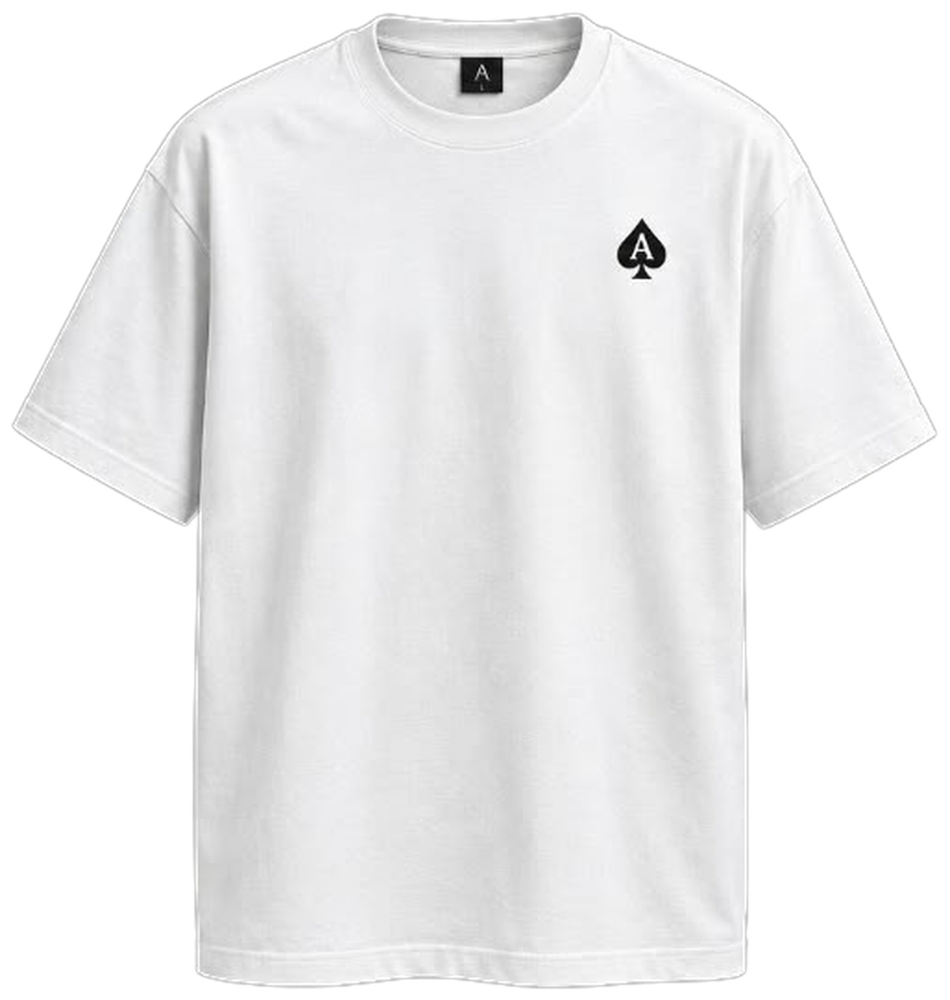
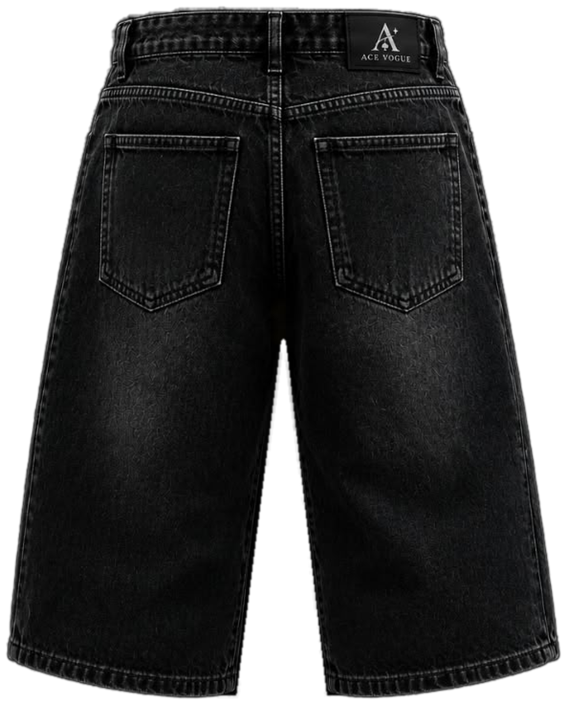
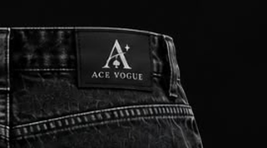
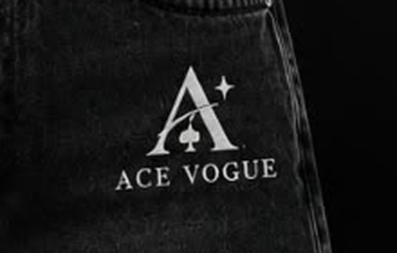

Dealyourselfin.
Oversized tees and washed denim knickers, made to be worn together and worn often.
Silence
No loud logos. The marks stay small and the cut does the talking.
Strategy
Each piece is chosen to work with the others, in any order.
Success
Confidence that does not need announcing.
The quietwhite tee.
An oversized white tee with a single spade on the chest. It says nothing until you turn around.
Oversized shapeSpade mark, chestPrinted back
Say it once.
- Under a jacketThe line stays private until the jacket comes off.
- With the knickersBlack and white, nothing in between.
- On its ownOversized, plain, direct.

The knickers.
Washed black. Wide leg.
Knee-length denim with a faded finish, built to sit under an oversized tee.
Front and back.
A logo on the front, a woven label at the waistband, and plain back pockets.
The chain stays.
Silver, hung from the belt loop and worn on the front.

In the details
Close crops from the product photography: the chain, the label, the back print and the front mark.



